Wenn Sie auf das Element in der Objektverwaltung klicken, werden auch die entsprechenden Minisymbolleisten des Objekts gezeigt.
Per Standard werden Minisymbolleisten angezeigt, wenn Sie ein Objekt auswählen oder in bestimmte Schlüsselbereiche innerhalb der Seite klicken.
Um die Minisymbolleisten zu verbergen, können Sie die Aktivierung im Menü Ansicht: Minisymbolleisten aufheben.
Drücken Sie die Shift-Taste, nachdem die Minisymbolleiste ausgeblendet wurde, um sie erneut anzuzeigen.
Um die genaue Schaltfläche auf der Minisymbolleiste zu finden, können Sie das Hilfsmittel Suchen 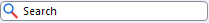 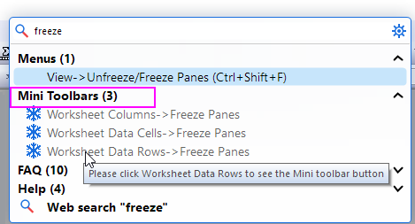
Zum Beispiel: Wenn Sie die Schaltflächen der Minisymbolleiste verwenden möchten, um die Zeilen im Arbeitsblatt zu fixieren, geben Sie das Stichwort fixieren im Suchfeld ein. Ihnen werden dann alle relevanten Schaltflächen im Abschnitt Minisymbolleisten aufgelistet. Wenn Sie die Maus über eine von ihnen bewegen, werden die Einzelheiten zu dieser Schaltfläche angezeigt.
|
Wenn Sie auf das Element in der Objektverwaltung klicken, werden auch die entsprechenden Minisymbolleisten des Objekts gezeigt. |
Für Gruppendiagramme können Sie die Zeichnungseigenschaften zusammen benutzerdefiniert anpassen, indem Sie die Schaltflächen auf der Registerkarte Gruppe verwenden. 
| Gruppierung aufheben |
Außerdem können Sie eine Zeichnungseigenschaft über die Schaltflächen auf der Registerkarte Einzeln benutzerdefiniert anpassen. 
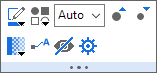
Einzelner Datenpunkt
| Symbolrandfarbe | Symbolfüllfarbe | ||
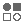 |
Symbolstil der Zeichnung | 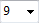 |
Symbolgröße |
| Symbolgröße vergrößern | Symbolgröße verkleinern | ||
| Symboltransparenz | Datenbeschriftungen zeigen | ||
| Ebenen festlegen | 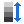 |
Farbabbildung neu skalieren | |
| Farbabbildung spiegeln | 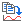 |
Zeichnung kopieren
Dann als neue Zeichnung in einen anderen Layer einfügen (Strg+V).
|
|
| Auf rechter Y zeichnen | Auf linker Y zeichnen | ||
| Bereich bearbeiten | Zeichnung ändern in | ||
Anpassungskurven hinzufügen
|
Trendlinie hinzufügen
|
||
| Auswählbar | Datenpunkt verbergen | ||
| Details Zeichnung öffnen |
| Linien-/Rahmenfarbe | Liniendicke | ||
| Liniendicke vergrößern | Liniendicke verkleinern | ||
| Datenbeschriftungen zeigen | 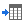 |
Zum Quellblatt gehen | |
|
Zeichnung kopieren
Dann als neue Zeichnung in einen anderen Layer einfügen (Strg+V).
|
X sortieren | ||
| Auf rechter Y zeichnen | Auf linker Y zeichnen | ||
| Bereich bearbeiten | Zeichnung ändern in | ||
Anpassungskurven hinzufügen
|
Fügen Sie eine Trendlinie hinzu.
|
||
| Auswählbar | Details Zeichnung öffnen |

Einzelne Säule

| Füllfarbe | Rahmenfarbe | ||
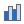 |
Säulenstapel
Klicken Sie auf diese Schaltfläche. Sie können aus der Liste die Stapelmethoden auswählen: 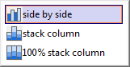 |
Datenbeschriftungen zeigen | |
| Größerer Abstand | Kleinerer Abstand | ||
| Auf rechter Y zeichnen | Auf linker Y zeichnen | ||
| Bereich bearbeiten | Zeichnung ändern in | ||
| Auswählbar | Datenpunkt verbergen | ||
| Details Zeichnung öffnen |

Datentyp für Boxdiagramm:

Intervalldiagramm:
|
Boxstil
Klicken Sie auf diese Schaltfläche. Sie können aus der Liste den Boxstil auswählen: 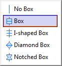 |
Boxtyp
Klicken Sie auf diese Schaltfläche. Sie können aus der Liste den Boxtyp auswählen: 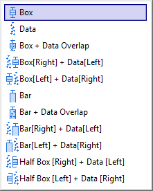 |
||
|
Boxlinie
Klicken Sie auf diese Schaltfläche. Sie können definieren, welche Boxlinie im DIagramm gezeigt wird: 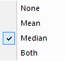 |
Box und Whisker
Klicken Sie auf diese Schaltfläche. Sie können Box und Whisker benutzerdefiniert anpassen. 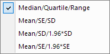 Für ein Intervalldiagramm ist diese Auswahlliste verfügbar: 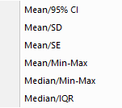 |
||
| Größerer Abstand | Kleinerer Abstand | ||
| Füllfarbe | Rahmenfarbe | ||
| Zeichnungssymbol (wenn Boxtyp = Daten)/Perzentilsymbol | Auf rechter Y-/linker Y-Achse zeichnen | ||
| Bereich bearbeiten | Auswählbar | ||
| Zum Quellblatt gehen | Details Zeichnung öffnen |

Gruppierte/Gestapelte Punktdiagramme
| Registerkarte Gruppe | Registerkarte Einzeln | ||
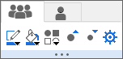 |
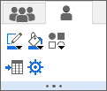 |


Kontur: 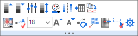
Heatmap: 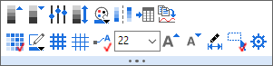
Heatmap mit aufgeteilten Kacheln 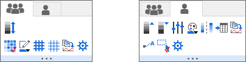
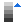 |
Hauptebene +1 | Hauptebene -1 | |
| Ebenen festlegen | Farbabbildung neu skalieren | ||
|
Paletten
Klicken Sie auf die Schaltfläche, um Paletten in der Auswahlliste auszuwählen. |
Farbabbildung spiegeln | ||
| Zum Quellblatt gehen |
Zeichnung kopieren
Dann als neue Zeichnung in einen anderen Layer einfügen (Strg+V) |
||
| Konturstil |
Zellenrand aktivieren (nur für Heatmap)
Hinweis: Klicken Sie auf diese Schaltfläche,
|
||
| Dicke der Gitternetzlinien vergrößern | Dicke der Gitternetzlinien verringern | ||
| Konturbeschriftungen zeigen/Datenbeschriftungen zeigen |  |
Schriftgröße der Beschriftung | |
| Schrift vergrößern | Schrift verkleinern | ||
| Beschriftungen neu positionieren |
Anmerkung für Minimum- und Maximumwert hinzufügen
Die Datenpunkte beim maximalen und minimalen Z-Wert werden mit einer Anmerkung versehen. |
||
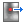 |
Datenpunkte extrahieren
Durch Klicken auf diese Schaltfläche können Sie den Dialog öffnen, um die zu extrahierenden Datenpunkte festzulegen. |
Bereich bearbeiten (nur für Heatmap) | |
| Auswählbar | Details Zeichnung öffnen |
2D-Fehlerbalken: 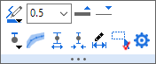
3D-Fehlerbalken: 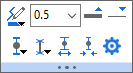
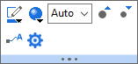
Einzelner Datenpunkt

| Füllfarbe | Rahmenfarbe | ||
| Balkenform: | Datenbeschriftungen zeigen | ||
| Größerer Abstand | Kleinerer Abstand | ||
| Zeichnung ändern in | Bereich bearbeiten | ||
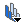 |
Säulenstapel
Klicken Sie auf diese Schaltfläche. Sie können aus der Liste die Stapelmethoden auswählen: 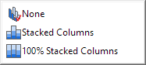 |
Details Zeichnung öffnen |
Eine Zeichnung im Diagramm: 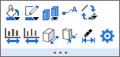
Einzelner Balken
Mehrere Zeichnungen im Diagramm: |
Eine Zeichnung im 3D-Band- & Wanddiagramm:
| Mehrere Zeichnungen im 3D-Banddiagramm: |
Mehrere Zeichnungen im 3D-Wanddiagramm: |


Ein Klick auf die Referenzlinien ruft die folgende Minisymbolleiste für die Anpassung auf:
Besonders wenn die Referenzlinie eine angepasste Kurve/Trendlinie ist (die zum Punkt- oder Liniendiagramm über die Schaltfläche Anpasungskurven  oder Trendlinie hinzugefügt werden kann), wird durch das Auswählen der Linie die folgende Minisymbolleiste angezeigt:
oder Trendlinie hinzugefügt werden kann), wird durch das Auswählen der Linie die folgende Minisymbolleiste angezeigt:
| Linienfarbe festlegen | Liniendicke in Pkt. auswählen oder eingeben | ||
| Liniendicke vergrößern | Liniendicke verkleinern | ||
| Linienstil festlegen |
Legen Sie fest, ob die Fläche zwischen der aktuellen Linie und der ausgewählten Referenzlinie mit Farbe gefüllt werden soll. Falls ja, können Sie aus der Auswahlliste die gewünschte Referenzlinie auswählen, bis zu der die Farbe gefüllt wird.
Beachten Sie, dass die Anpassungskurven, Trendlinien, andere Referenzlinien, die über den Dialog Achsen hinzugefügt wurden, und Anfang und Ende der Achsen in der Auswahlliste aufgeführt sind. |
||
|
Beschriftungen zeigen
Beschriftung des Referenzwerts hinzufügen Bei Anpassungskurven und Trendlinien (verfügbar, wenn Trendtyp nicht auf Gleitender Durchschnitt gesetzt ist) können Sie wählen, ob die Anpassungsgleichung/Trendliniengleichung und/oder der R-Quadrat-Wert gezeigt werden. Bei linearen Anpassungskurven (wenn der Trendtyp auf Linear gesetzt ist) können Sie Pearsons r zeigen.
|
Beschriftungsposition
Wenn eine Beschriftung hinzugefügt wurde, wählen Sie in der Auswahlliste eine Beschriftungsposition oder die relative Beschriftung zu Feld/Layer. |
||
|
Ausgewählte Anpassungskurve/Trendlinie verbergen
Hinweise: |
Klicken Sie auf diese Schaltfläche, um die ausgewählte Referenzlinie wieder in die Datenzeichnung einzufügen. | ||
Verfügbar für Anpassungskurven und Trendlinien. Trendtyp ändern
|
Durch einen Klick auf diese Schaltfläche wird der Dialog Parameter festlegen aufgerufen, mit dem Sie festlegen können, welche Parameter fest sein sollen und bei welchem Wert sie fixiert werden. | ||
| Verfügbar, wenn Trendtyp auf Polynomiell gesetzt ist. Legen Sie den Ordnungswert von 2 bis 10 fest oder geben Sie die Ordnungszahl in das letzte Bearbeitungsfeld ein. |
Verfügbar, wenn Trendtyp auf Gleitender Durchschnitt gesetzt ist. Legen Sie die Anzahl der Punkte im beweglichen Fenster fest. Wert von 2 bis 10, und Sie können manuell die Zahl in das letzte Bearbeitungsfeld eingeben.
|
||
| Formateinstellungen der aktuellen Referenzlinie auf Referenzlinien im aktiven Layer oder Fenster anwenden | Aktuelle Formatierung der ausgewählten Referenzlinie als Standard für andere Referenzlinien, die später erstellt werden, festlegen | ||
| Dialog Referenzlinien öffnen |
Wenn Sie die Schaltfläche Füllen bis wählen, um Farbe zwischen die Referenzlinien zu füllen, klicken Sie auf die Füllfarbe, um die zugehörige Minisymbolleiste aufzurufen.
Die Füllfarbe zwischen den Referenzlinien

| Füllfarbe | Ziehen Sie an dem Schieber, um die Transparenz zu ändern. | ||
| Linie für Anfang zeigen | Linie für Ende zeigen | ||
| Verschieben Sie die Füllfarbe vor die Datenzeichnung. | Dialog Referenzlinien öffnen |

Klicken Sie auf den Bereich innerhalb des Layerrahmens, um die Minisymbolleiste für den Diagrammlayer anzuzeigen:
Wenn mehrere Layer ausgewählt sind:
| Neu skalieren |
Layerrahmen
Layerrahmen verbergen/zeigen |
||
|
Achsenanordnungen
Klicken Sie auf diese Schaltfläche. Sie können die Achsenanordungen in der Liste auswählen: |
Hintergrundfarbe des Layers | ||
| Andere Layer verbergen | Statistische Referenzlinien hinzufügen | ||
| Legende | Legen Sie die XY-Achsenskalierung so fest, dass sie die gleiche Länge in Pixel wie der gleiche linearisierte Skalierungsbereich hat. | ||
| Layertitel hinzufügen | Diagramm hinzufügen | ||
| Nur innerhalb des Rahmens | Dialog öffnen | ||
| Automatisch neu skalieren | Auswählbar | ||
|
Datenzeichnungen zeigen
Zeichnungen im Layer zeigen und verbergen |
Formatierung anwenden auf ...
Formatierung dieses Objekt auf andere Objekte dieses Typs anwenden |
||
| Ausgewähltes Objekt verbergen |
Stil der Achsenhilfsstriche
Klicken Sie auf diese Schaltfläche. Sie können in der Liste den Stil der Achsenhilfsstriche definieren: |
||
|
Richten Sie die ausgewählten Layer aus. Nur verfügbar, wenn mehrere Layer ausgewählt sind.
|
Tauschen Sie die Position der ausgewählten Layer aus. Nur verfügbar, wenn zwei Layer ausgewählt sind. | ||
| Einheitliche Höhe der ausgewählten Layer Nur verfügbar, wenn mehrere Layer ausgewählt sind. | Einheitliche Breite der ausgewählten Layer Nur verfügbar, wenn mehrere Layer ausgewählt sind. |
| Klicken, um die Größe des Layerrahmens zu ändern | Klicken, um den Layerrahmen zu drehen | ||
| Neu skalieren | Ebenen zeigen/verbergen: | ||
| Gitternetzlinien auf folgender/n Ebene/n zeigen | Diagramm hinzufügen | ||
| Zeichnungen im Layer zeigen/verbergen | Ausrichtung der Achsenhilfsmittel und Beschriftungen: | ||
| Würfelrahmen zeigen/verbergen | Automatisch neu skalieren | ||
| Layertitel hinzufügen | Dialog öffnen |
Verschieben Sie den Cursor an den Seitenrand und klicken Sie auf den Rahmen oder in den grauen Bereich außerhalb der Diagrammseite, wenn sich der Cursor in  verwandelt. Die folgende Minisymbolleiste wird angezeigt:
verwandelt. Die folgende Minisymbolleiste wird angezeigt:
2D (ein Layer in einem Diagramm)

2D (mehrere Layer in einem Diagramm)
3D

|
Diagrammstile
Klicken Sie auf diese Schaltfläche, um die App Designvorschau zu öffnen. |
Schlösser zeigen
Neuberechnungsschlösser zeigen |
||
|
An PowerPoint senden ohne Öffnen des Dialogs
Mit den folgenden Einstellungen senden:
|
Grafik an Word senden ohne Öffnen des Dialogs
Mit den folgenden Einstellungen senden:
|
||
| Analysemarkierer zeigen/verbergen |
Gitternetze zeigen
|
||
| Abstände des Gitternetzes vergrößern | Abstände des Gitternetzes verkleinern | ||
| Tooltipp für Datenpunkt oder Datenzeichnung umschalten | Banner für Entwurfsmodus zeigen/verbergen | ||
| Layersymbole zeigen/verbergen | Layer nur durch Symbole aktivieren | ||
| Nur aktiven Layer zeigen | Symbole für Achsen zeigen/verbergen | ||
| Markierung von aktivem Layer zeigen | Diagramm als Bild kopieren | ||
| Seitentitel hinzufügen |
Maskierte Datenpunkte im aktuellen Diagramm durch Auswahl in der Auswahlliste verbergen oder zeigen. Nur verfügbar, wenn es maskierte Daten im Diagramm gibt.
|
||
|
Diagramm von dichten Daten
Datenzeichnungen als Bild im Zwischenspeicher ablegen, um schnelle Änderungen an Beschriftungen etc. zuzulassen. Diagramm aktualisieren, um Bilder zu aktualisieren. |
Fensteransicht | ||
| Layer auf Seite zentrieren |
Seite an Layer anpassen
Klicken Sie auf diese Schaltfläche, um den Dialog Seite an Layer anpassen zu öffnen. |
||
| Browserdiagramm mit wechselnder Spalte | Browserdiagramm mit wechselnder/m Blatt/Mappe | ||
|
Layer anordnen
Klicken Sie diese Schaltfläche, um den Dialog Layer anordnen öffnen. |
Zeichnung durch Bewegen der Maus hervorheben | ||
|
Datenschnitt
Klicken Sie auf diese Schaltfläche, um einen Datenschnitt zum Diagramm hinzuzufügen. Weitere Einzelheiten finden Sie hier. |
Fügen Sie eine Filterbedingung zum Layertitel für alle Layer auf der Diagrammseite hinzu.
Diese Schaltfläche ist verfügbar, wenn das Diagramm über Datenschnitte verfügt. |
||
| Prüfen Sie die folgenden Eigenschaften, um benutzerdefinierte Anpassungen auf alle Layer anzuwenden: |
Beschriftung für Layer hinzufügen
Öffnen Sie den Dialog zum Hinzufügen von Beschriftungen zu Layern in einem Diagramm. |
||
| Farben umkehren | Hilfsstrichsstil | ||
| Legende für alle Layer zeigen/verbergen | Dialog Eigenschaften öffnen |
Verschieben Sie den Cursor an den Seitenrand und klicken Sie auf den Rahmen oder in den grauen Bereich außerhalb der Seite, wenn sich der Cursor in  verwandelt. Die folgende Minisymbolleiste wird angezeigt:
verwandelt. Die folgende Minisymbolleiste wird angezeigt:
| Gitternetze zeigen | Folienansicht ein-/ausschalten (Rahmen wird nicht gezeigt) | ||
| Abstände des Gitternetzes vergrößern | Abstände des Gitternetzes verringern | ||
| Eingebettete Diagrammauswahl aktivieren/deaktivieren | Dialog Eigenschaften öffnen |
Einschließlich: Text, Anmerkung
| Schriftart festlegen | |
Schriftgröße | |
| Schrift vergrößern | Schrift verkleinern | ||
| Schriftfarbe | Fett | ||
|
Umbruch für Text
Breite anpassen, um den Umbrucheffekt zu sehen |
Ausrichtung | ||
| Im Uhrzeigersinn drehen | Gegen den Uhrzeigersinn drehen | ||
|
Formatierung anwenden auf ...
Die Formatierung dieses Objekts wird auf andere Objekte diesen Typs angewendet. |
Verknüpfung zur Substitution | ||
| Auswählbar | Dialog Eigenschaften öffnen |
| Schriftart festlegen | |
Schriftgröße | |
| Schrift vergrößern | Schrift verkleinern | ||
| Schriftfarbe | Boxbreite | ||
| Fett |
Umbruch für Text
Breite anpassen, um den Umbrucheffekt zu sehen |
||
| Im Uhrzeigersinn drehen | Gegen den Uhrzeigersinn drehen | ||
| Ausrichtung |
Formatierung anwenden auf ...
Die Formatierung dieses Objekts wird auf andere Objekte diesen Typs angewendet. |
||
| Verknüpfung zur Substitution | Dialog Eigenschaften öffnen |

| Schriftart festlegen | |
Schriftgröße | |
| Schrift vergrößern | Schrift verkleinern | ||
| Schriftfarbe | Rahmen | ||
| Legende rekonstruieren |
Übersetzungsmodus der Legende für die Datenzeichnung
|
||
| Umgekehrt | Horizontal anordnen | ||
| Zeigen/Verbergen | An Zeichnungen anhängen | ||
| Umbruch für Text | Aktiven Datensatz kennzeichnen | ||
| Ausgewähltes Objekt verbergen | Dialog Eigenschaften öffnen |
| Größere Symbolbreite | Kleinere Symbolbreite | ||
| Punktsymbol vergrößern | Punktsymbol verkleinern | ||
| Liniendicke vergrößern | Liniendicke verkleinern | ||
| Größere Musterblockbreite | Kleinere Musterblockbreite | ||
| Größere Musterblockhöhe | Kleinere Musterblockhöhe | ||
| Dialog Eigenschaften öffnen |

| Erste und letzte Ebene zeigen | Titel zeigen | ||
| Hauptebene +1 | Hauptebene -1 | ||
| Bereichsbeschriftung | Dezimalstellen | ||
| Separates Layout | Umgekehrte Reihenfolge | ||
| Anordnung | Max. & Min. Ebenen | ||
| Dialog Eigenschaften öffnen |

| Ebene hinzufügen | Ebene löschen | ||
| Größerer Symbolabstand | Kleinerer Symbolabstand | ||
| Layout | Stellen | ||
| Blasenstil | Titel zeigen | ||
| Dialog Eigenschaften öffnen |


| Linien-/Rahmenfarbe | Liniendicke | ||
| Liniendicke vergrößern | Liniendicke verkleinern | ||
| Linienstil | Dialog Eigenschaften öffnen | ||
|
Anfang der Pfeilform
|
Ende der Pfeilform
|
||
| Größere Pfeilbreite | Kleinere Pfeilbreite | ||
| Größere Pfeillänge | Kleinere Pfeillänge | ||
| Im Uhrzeigersinn drehen | Gegen den Uhrzeigersinn drehen | ||
| Pfeil auf Bogen | Punkte bearbeiten | ||
| Richtung des gewinkelten Pfeils |
Einschließlich: Polylinie, Kurve, Freihandzeichnen, Rechteck, Kreis, Polygon und Bereich.

| Linien-/Rahmenfarbe | Liniendicke | ||
| Liniendicke vergrößern | Liniendicke verkleinern | ||
| Füllfarbe | Transparenz | ||
| Punkte bearbeiten |
Gleichschenkeliges Trapez
(Für das Trapezobjekt) |
||
| Vordergrund | In den Hintergrund setzen | ||
| Vorwärts | Rückwärts | ||
| Hinten (Daten) | Im Uhrzeigersinn drehen | ||
| Gegen den Uhrzeigersinn drehen | Dialog Eigenschaften öffnen |
Klammern mit Sternchen, die über die Symbolleiste Objekt zu Diagramm hinzufügen hinzugefügt wurden, können mit Hilfe der Schaltflächen dieser Minisymbolleiste bearbeitet werden.
Klicken Sie auf die Klammer und die Minisymbolleiste unten wird gezeigt:
| Linien-/Rahmenfarbe | Liniendicke | ||
| Liniendicke vergrößern | Liniendicke verkleinern | ||
| Oben (Ausrichtung) | Unten (Ausrichtung) | ||
| Links (Ausrichtung) | Rechts (Ausrichtung) | ||
| Klammerntyp | Anfang der Pfeilform | ||
| Ende der Pfeilform |
Wenn mehrere Text- oder Zeichenobjekte ausgewählt werden, können Sie diese Minisymbolleiste verwenden, um diese Objekte zu steuern. Wenn die ausgewählten Objekte vom gleichen Typ sind, können sie gleichzeitig mit Hilfe der Minisymbolleiste geändert werden.
| Gruppierung aufheben | Gruppe | |
|---|---|---|
| Text- und Zeichenobjekte auswählen | ||
| Zwei Textobjekte auswählen | ||
| Drei oder mehr Textobjekte auswählen | ||
| Zwei Zeichenobjekte (Linien) auswählen | ||
| Drei oder mehr Zeichenobjekte (Linien) auswählen |  |
|
| Zwei Zeichenobjekte auswählen |  |
|
| Drei oder mehr Zeichenobjekte auswählen |
Neben den grundlegenden Schaltflächen für Textobjekt oder Zeichenobjekt gibt es zwei spezifische Schaltflächen:
| Linke Ausrichtung | Rechte Ausrichtung | ||
| Obere Ausrichtung | Untere Ausrichtung | ||
| Horizontale Ausrichtung | Vertikale Ausrichtung | ||
| Einheitliche Breite (Rechtecke, Ellipse und UIM-Objekte) | Einheitliche Höhe (Rechtecke, Ellipse und UIM-Objekte) | ||
| Horizontal verteilen | Vertikal verteilen | ||
| Gruppe | Gruppierung aufheben | ||
| Vordergrund | In den Hintergrund setzen | ||
| Vorwärts | Rückwärts | ||
| Hinten (Daten) | Ausgewähltes Objekt verbergen | ||
| Ausgewählte Objekte ausrichten | Position der ausgewählten Objekte austauschen Nur verfügbar, wenn zwei Objekte ausgewählt sind. |

| Skalierungen | |
Schriftgröße | |
| Faktor von X-Inkrement | Faktor von Y-Inkrement | ||
| Schrift vergrößern | Schrift verkleinern | ||
| Linien-/Rahmenfarbe | Liniendicke | ||
| Liniendicke vergrößern | Liniendicke verkleinern | ||
| Größere Pfeilbreite | Kleinere Pfeilbreite | ||
| Dialog Eigenschaften öffnen |
| Achsenbereich vergrößern | Achsenbereich verkleinern | ||
| Scrollbereich vergrößern | Scrollbereich verkleinern | ||
| Zurücksetzen | Dialog Eigenschaften öffnen |

| Anzeigebereich festlegen | Auswahl entfernen | ||
| Daten für alle Auswahlen kopieren | Daten kopieren | ||
| Daten löschen |

| Markierungsgröße |
| Tabellenstil | Spaltenbeschriftung | ||
| Eigenschaften in Tabelle | Headerfüllfarbe | ||
| Zellenfüllfarbe | Farbe für vereinte Zeile | ||
| Rahmenfarbe | Rahmenbreite | ||
| Liniendicke vergrößern | Liniendicke verkleinern | ||
| Schriftart festlegen | |
Schriftgröße | |
| Schrift vergrößern | Schrift verkleinern | ||
| Schriftfarbe | Stellen |
Wenn der Cursor sich im Modus Zeiger  befindet, wählen Sie einen rechteckigen Bereich (roter Rahmen) innerhalb eines Diagrammlayers aus. Im Anschluss wird diese Minisymbolleiste gezeigt.
befindet, wählen Sie einen rechteckigen Bereich (roter Rahmen) innerhalb eines Diagrammlayers aus. Im Anschluss wird diese Minisymbolleiste gezeigt.

| Achsenskalierung vergrößern | In separater Grafik vergrößern | ||
|
Daten kopieren
Alle Daten im Rechteck als mehrere Spalten kopieren |
Daten als einen Datensatz kopieren
Alle Daten im Rechteck als eine XY-Spalte kopieren |
Gehen Sie zur letzten Spalte im aktuellen Arbeitsblatt, verschieben Sie den Cursor an den Rand des Arbeitsblatts und klicken Sie auf den grauen Bereich, wenn der Cursor in  verwandelt wird. Die folgende Minisymbolleiste wird angezeigt:
verwandelt wird. Die folgende Minisymbolleiste wird angezeigt:

| Spalten zeigen | Spaltenbreite ändern, um gesamten Inhalt anzuzeigen. Die verborgenen Spalte(n) werden standardmäßig übersprungen. | ||
| Spaltenlistenansicht |
Zellenformeln/verknüpfte Syntax zeigen
Wie Ansicht: Formel zeigen ( Strg + ` ) |
||
| Kategorienindizes zeigen | Fixierung von Bereichen im Arbeitsblatt aufheben. Verfügbar, wenn es fixierte Spalten im Arbeitsblatt gibt. | ||
| Vereinte Zeilen einschalten |
Dialog Farbe der vereinten Zeilen im Arbeitsblatt öffnen Nur verfügbar, wenn vereinte Zeilen eingeschaltet ist. |
||
| Verwenden Sie das Untermenü, um Formate (Fett, Füllfarbe etc.), Inhalte, eingefügte Notizen oder alles obenstehende im Arbeitsblatt zu löschen. | Spalte hinzufügen | ||
| Einfachen Dialog für Suche im Arbeitsblatt öffnen | Dialog Blattnotizen öffnen, um Kommentare und Reiterfarben zum aktuellen Blatt hinzuzufügen. | ||
| Dialog Optionen für Blattschutz öffnen | Dialog Eigenschaften öffnen |
Klicken Sie auf den Spaltenheader, um die Spalte auszuwählen. Die folgende Minisymbolleiste wird angezeigt:
| Text | Text & Numerisch, Numerisch |
 |
|
| Datum | Zeit |
 |
 |
| Farbe | |
 |
| Spalte(n) verbergen | Alle zeigen durch Neuskalieren | ||
| Arbeitsblatt aufsteigend sortieren | Suchen | ||
| Sparklines hinzufügen | Kategorial | ||
| Datenfilter hinzufügen | Löschen | ||
|
Abtastintervall
Ersten X-Wert und Inkrement des X-Werts festlegen, so dass eine separate X-Spalte nicht notwendig ist. |
|||
| Einfügen | Zum Zeichnen kopieren | ||
| Als X setzen | Als Y setzen | ||
| Als Z setzen | Als Spalte ignorieren setzen | ||
| Als X-Fehler setzen | Als Y-Fehler setzen | ||
| Spaltenformat aus der Auswahlliste festlegen | Auswahl aus der Liste treffen, um die Anzahl der Stellen für die numerische Anzeige festzulegen | ||
| Datum | Bereich mit Name definieren | ||
| Zeit | Wraparound-Zeit festlegen | ||
| Als Inkrementliste speichern | Farbe laden | ||
| Die ausgewählte Spalte fixieren | Fixierung aufheben | ||
| Zellenformel und Zellenlink in reinen Wert umwandeln | Verwenden Sie das Untermenü, um Formate (Fett, Füllfarbe etc.), Inhalte, eingefügte Notizen oder alles obenstehende im Arbeitsblatt zu löschen. | ||
| Spalteneigenschaften öffnen |
Drücken Sie die linke Maustaste, um die erste Spalte auszuwählen, und ziehen Sie per Drag&Drop, um mehrere Spalten auszuwählen. Die folgende Minisymbolleiste wird angezeigt:

| Spalten verbergen | Alle zeigen durch Neuskalieren | ||
| Suchen | Sparklines hinzufügen | ||
| Datenfilter hinzufügen | Ausgewählte Spalten löschen | ||
| Anzahl der ausgewählten Spalten vor der ersten ausgewählten Spalte einfügen | Zum Zeichnen kopieren | ||
| Auswahl aus der Liste treffen, um die Anzahl der Stellen für die numerische Anzeige festzulegen | Spaltenformat aus der Auswahlliste festlegen | ||
| Die ausgewählten Spalte fixieren | Zellenformel in Wert umwandeln | ||
| Inhalt/Formate/Notizen der ausgewählten Spalten löschen | Dialog Arbeitsblatteigenschaften öffnen |
Klicken Sie auf den Zeilenheader, um die Zeile auszuwählen. Die folgende Minisymbolleiste wird angezeigt:

| Verbergen | Zeile zeigen | ||
| Daten maskieren/demaskieren | Löschen | ||
| Die ausgewählte Zeile fixieren | Fixierung aufheben | ||
| Zu Langname verschieben | Zu Einheiten verschieben | ||
| Zu Kommentaren verschieben | Zu benutzerdefinierter Beschriftung verschieben | ||
| Einfügen | Alle Datenzeilen vor der ausgewählten Zeile löschen | ||
| Ausgewählte Zeile nach oben verschieben | Ausgewählte Zeile nach unten verschieben | ||
|
Box der Quelldaten
Verfügbar, wenn eine Zeile im Ergebnisblatt (DescStatsQuantities) von Statistik für gesamtes Blatt ausgewählt ist. Klicken Sie auf diese Schaltfläche, um ein Boxdiagramm aus der Quelldatenspalte der ausgewählten Zeile zu erstellen. |
Histogramm der Quelldaten
Verfügbar, wenn eine Zeile im Ergebnisblatt (DescStatsQuantities) von Statistik für gesamtes Blatt ausgewählt ist. Klicken Sie auf diese Schaltfläche, um ein Histogramm aus der Quelldatenspalte der ausgewählten Zeile zu erstellen. |
||
|
Wahrscheinlichkeitsdiagramm der Quelldaten
Verfügbar, wenn eine Zeile im Ergebnisblatt (DescStatsQuantities) von Statistik für gesamtes Blatt ausgewählt ist. Klicken Sie auf diese Schaltfläche, um ein P-P-Diagramm aus der Quelldatenspalte der ausgewählten Zeile zu erstellen. |
Mehrfache lineare Regression
Verfügbar, wenn eine Zeile im Blatt Zusammenfassung der App Best Subset Selection ausgewählt wurde. Klicken Sie auf diese Schaltfläche, um eine mehrfache lineare Regression mit dem durch die aktuelle Zeile festgelegten Modell durchzuführen. |
Drücken Sie die linke Maustaste, um die erste Zeile auszuwählen, und ziehen Sie per Drag&Drop, um mehrere Zeilen auszuwählen. Die folgende Minisymbolleiste wird angezeigt:
| Verbergen | Zeile zeigen | ||
| Daten maskieren/demaskieren | Löschen | ||
| Die ausgewählte Zeile fixieren | Fixierung aufheben | ||
| Einfügen | Alle Datenzeilen vor der ausgewählten Zeile löschen | ||
| Ausgewählte Zeilen nach oben verschieben | Ausgewählte Zeilen nach unten verschieben | ||
|
Box der Quelldaten
Verfügbar, wenn Zeilen im Ergebnisblatt (DescStatsQuantities) von Statistik für gesamtes Blatt ausgewählt ist. Klicken Sie auf diese Schaltfläche, um ein Boxdiagramm aus der Quelldatenspalte der ausgewählten Zeilen zu erstellen. |
Histogramm der Quelldaten
Verfügbar, wenn Zeilen im Ergebnisblatt (DescStatsQuantities) von Statistik für gesamtes Blatt ausgewählt ist. Klicken Sie auf diese Schaltfläche, um ein Histogramm aus der Quelldatenspalte der ausgewählten Zeilen zu erstellen. |
Klicken Sie auf die einzelne Zelle mit Wert. Die folgende Minisymbolleiste wird angezeigt:
Zelle enthält Daten
Zelle enthält Bild

Zelle in Farbspalte
| Daten maskieren/demaskieren | Auswahl bis zur letzten Datenzeile erweitern | ||
| Zeilen vor der ausgewählten Zelle löschen. Verfügbar, wenn die ausgewählte Zelle sich nicht in der ersten Zeile befindet. | Bereich mit Name definieren | ||
|
Notiz einfügen
Hinweis: Eine in eine Arbeitszelle eingefügte Notiz unterstützt die Syntax Origin Rich Text und wird als Rendermodus angezeigt. |
Notiz in einem separaten Notizfenster öffnen | ||
 |
LaTeX-Gleichung einfügen | Als Bild kopieren | |
| Bereiche fixieren | Fixierung aufheben | ||
| Neue Farbe auswählen |
Farbe bearbeiten
Klicken Sie diese Schaltfläche, um den Standarddialog Farbe zu öffnen. |
||
| Zellenformel und Zellenlink in reinen Wert umwandeln | Verwenden Sie das Untermenü, um Formate (Fett, Füllfarbe etc.), Inhalte, eingefügte Notizen oder alles obenstehende im Arbeitsblatt zu löschen. |
Mehrere Zellen in einer Spalte markieren:
Mehrere Zellen in mehreren Spalten markieren:
| Daten maskieren/demaskieren | Zum Zeichnen kopieren | ||
| Auswahl bis zur letzten Datenzeile erweitern | Zeilen vor der ausgewählten Zelle löschen. Verfügbar, wenn die ausgewählte Zelle sich nicht in der ersten Zeile befindet. | ||
| Dynamisches Verbinden von ausgewählten Zellen | |||
| Bereiche fixieren | Fixierung aufheben | ||
| Zellenformel und Zellenlink in reinen Wert umwandeln | Verwenden Sie das Untermenü, um Formate (Fett, Füllfarbe etc.), Inhalte, eingefügte Notizen oder alles obenstehende im Arbeitsblatt zu löschen. |
Wenn eine Spaltenbeschriftungszeile ausgewählt ist:

Wenn Beschriftungszeile = Langname ausgewählt ist:
Wenn eine benutzerdefinierte Parameterzeile ausgewählt ist:

| Rich Text |
Umbruch für Text
Breite & Höhe anpassen, um den Umbrucheffekt zu sehen |
||
| Anwenderparameter einfügen | Anwenderparameter verbergen/zeigen | ||
| Ausgewählte Beschriftungszeile als kategorical festlegen | Die ausgewählte Zeile der Anwenderparameter (einschließlich ggf. der Formel) wird auf andere Blätter angewendet. | ||
| Zeile nach oben verschieben | Zeile nach unten verschieben | ||
| Einheiten aus Langname extrahieren | Zellen in der ausgewählten Zeile dynamische zusammenfügen | ||
| Verbergen | Einheiten aus Langname extrahieren ... | ||
| Verwenden Sie das Untermenü, um Formate (Fett, Füllfarbe etc.), Inhalte, eingefügte Notizen oder alles obenstehende im Arbeitsblatt zu löschen. | Dialog Eigenschaften öffnen |
| Füllfarbe | Farbe für vereinte Zeile | ||
| Rahmenstärke |
Gitternetze zeigen
|
||
| Gitternetzliniendicke | Gitternetzlinienfarbe | ||
| Dickere Gitternetzlinie | Dünnere Gitternetzlinie | ||
| Rahmenfarbe | |||
|
Schriftgröße | Schriftfarbe | |
| Schrift vergrößern | Schrift verkleinern | ||
| Update des Arbeitsblatts |
Klicken Sie auf die obere linke Ecke der Matrix, um das gesamte Matrixobjekt zu markieren. Die folgende Minisymbolleiste wird angezeigt:
| Füllfarbpalette für die Miniaturbilder. Verfügbar, wenn die Bildauswahl eingeschaltet ist. |
Fehlende Wertfarbe. Verfügbar, wenn die Bildauswahl eingeschaltet ist. |
||
| Farbabbildung spiegeln Verfügbar, wenn die Bildauswahl eingeschaltet ist. |
|||
| X/Y zeigen | Bild anzeigen | ||
| Bildauswahl | Schieber oder Miniaturbilder | ||
| Daten löschen | Zum Zeichnen kopieren | ||
| Dialog Blattnotizen öffnen, um Notizen und Reiterfarben zum aktuellen Blatt hinzuzufügen. | Dialog Neuer Name öffnen, um einen Bereich zu definieren. | ||
| Organizer zeigen | Dialog Eigenschaften öffnen |
Verschieben Sie den Cursor an den Seitenrand und klicken Sie auf den Rahmen oder in den grauen Bereich außerhalb der Seite, wenn sich der Cursor in  verwandelt. Die folgende Minisymbolleiste wird angezeigt:
verwandelt. Die folgende Minisymbolleiste wird angezeigt:
Bild mit einzelnem Frame

Gestapeltes Bild mit mehreren Frames
| ROI-Feld hinzufügen |
Tatsächliche Größe anzeigen
Durch Aktivieren wird die tatsächliche Bildgröße gezeigt. Durch Deaktivieren wird das Bild an die Seitengröße angepasst. |
||
| Die fehlenden Werte werden mit der ausgewählten Farbe gefüllt. Nur verfügbar, wenn das Bild fehlende Werte hat. |
Graustufenschieber
Klicken Sie, um einen Dialog zu öffnen und den Schieber zu verwenden, um die graustufige Anzeige festzulegen. Nur verfügbar für graustufige Bilder mit z1 und z2. Einzelheiten lesen Sie auf dieser Seite. Hinweis: Man kann auch folgenden LabTalk-Befehl ausführen, um den Dialog zu öffnen. run.section(imgfile,grayslider); |
||
| Horizontal spiegeln | Vertikal spiegeln | ||
| 90 Grad im Uhrzeigersinn drehen | Wählen Sie aus den folgenden 4 Navigationsmethoden: | ||
|
Im Uhrzeigersinn drehen
Das Inkrementgrad wird mit @IMGR bestimmt. |
Gegen den Uhrzeigersinn drehen
Das Inkrementgrad wird mit @IMGR bestimmt. |
||
|
Grau
Farbbild in Bild mit Graustufen umwandeln |
Palette umkehren
Die angewendete Palette revidieren |
||
|
Graustufenbereich festlegen
Öffnen Sie den Dialog cvgraymax, um den graustufigen Anzeigebereich festzulegen. Nur für graustufige Bilder verfügbar. |
Graufstufenbereich zurücksetzen
Der graustufige Bereich wird auf die ursprünglichen Werte zurückgesetzt. Datenmarkierungen |
Beim Öffnen der Datenmarkierung wird diese Minisymbolleiste in der oberen rechten Ecke des Diagramm- oder des Arbeitsmappenfensters gezeigt.

| Teildatensatzblatt erstellen | Kategorien erstellen | ||
| Markierte Punkte maskieren/demaskieren | Abgeblendete Punkte maskieren/demaskieren | ||
| Punkte löschen | Dialog Eigenschaften öffnen |
Klicken Sie auf die Ordnernamen im Projekt Explorer, um diese Minisymbolleiste aufzurufen:
| Ordnernotizen | Ordner duplizieren | ||
| Dialog Ordnereigenschaften öffnen |
Verschieben Sie den Cursor an den Rand des Berichtsblatts und klicken Sie auf den Rand oder in den leeren Bereich außerhalb des Berichtsblatts, wenn sich der Cursor in  verwandelt. Die folgende Minisymbolleiste wird angezeigt:
verwandelt. Die folgende Minisymbolleiste wird angezeigt:

| Alle offenen Zweige an Word senden | Alle Grafiken an PowerPoint senden |
Klicken Sie auf das Diagramm im Berichtsblatt, um diese Minisymbolleiste aufzurufen:

| Diagramm zum Bearbeiten öffnen |
Diagrammgröße und -anordnung ändern
Klicken Sie auf diese Schaltfläche und Sie können die Diagrammgröße und -anordnung in diesem Berichtsblatt ändern. |
||
|
An PowerPoint senden
Das ausgewählte Diagramm wird an PowerPoint gesendet. |
Send to Word
Das ausgewählte Diagramm wird an Word gesendet. |
||
|
Anwenden auf
Die Formatierung dieses Objekt wird auf andere Objekte dieses Knotens angewendet. |
Einige Schaltflächen auf der Minisymbolleiste vergrößern oder verringern Eigenschaften um ein Inkrement jedes Mal, wenn Sie auf die Schaltfläche klicken (z. B. Schriftgröße des Textes). Mit den folgenden LabTalk-Systemvariablen steuern Sie das Inkrementieren:
Sie können den Inkrementwert einer besonderen Schaltfläche überprüfen, indem Sie den Cursor darüber bewegen. Die Statusleiste meldet das aktuelle Inkrement und die LabTalk-Systemvariable, die Sie modifizieren können, um das Inkrement zu ändern.
Informationen zum Ändern des Wert einer LabTalk-Systemvariablen finden Sie unter FAQ-708 Wie ändere ich permanent den Wert einer Systemvariablen?.
| Objekt | Schaltflächen der Minisymbolleiste | Systemvariable | Standardinkrement |
|---|---|---|---|
| Symbolgröße |  |
@INCSS | 1 |
| Liniendicke | @INCLT | 1 | |
| Schriftgröße | @INCFS | 1 | |
| Drehung der Hilfsstrichsbeschriftung | @INCTLR | 15 | |
| Drehung der Textobjekte |  |
@INCTOR | 90 |
| Drehung der Diagrammobjekte |  |
@INCGOR | 45 |
| Hilfsstrichslänge |  |
@INCTL | 1 |
| Drehung des Kreises |  |
@INCPR | 10 |
| Lochgröße des Rings | @INCDHS | 5 | |
| Abstand der Lücke (Säulen, Ring, Box) |
(Beispiel zum Ringdiagramm) |
@INCSG | 5 |
| Unterbrechungslänge |  |
@INCBL | 1 |
| Unterbrechungsabstand | @INCBG | 15 |